Juju enables developers to design and build cloud infrastructure faster than any other product on the market. It was originally developed as a command line interface (CLI) tool. JAAS (Juju as a service) is moving Juju to a GUI and being able to build and deploy without your own infrastructure.
The product was lead by Luca Paulina and Spencer Bygraves lead the visual design. I worked between Luca and Spencer.
The canvas is where the visual building and connecting of services happens. As people were building more and more complex applications it became apparent that making sure that status and health was clear. We aimed to simplify the visual language by removing green completely and only notifying the user if there is something wrong using a new bold colour palette and reducing the complexity of the design. Animations were also specced out to help make the canvas more playful and intuitive.
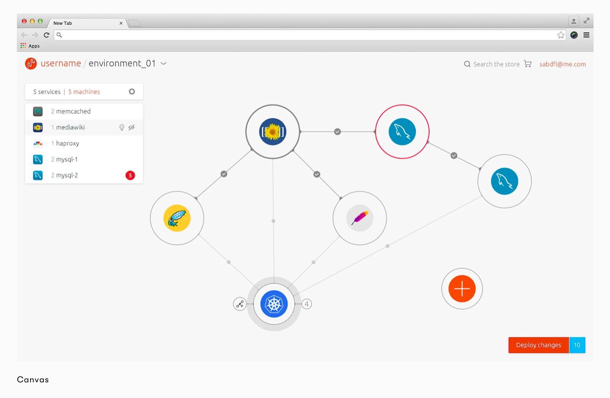 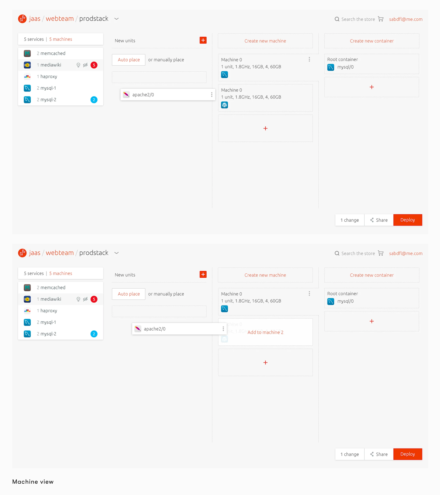 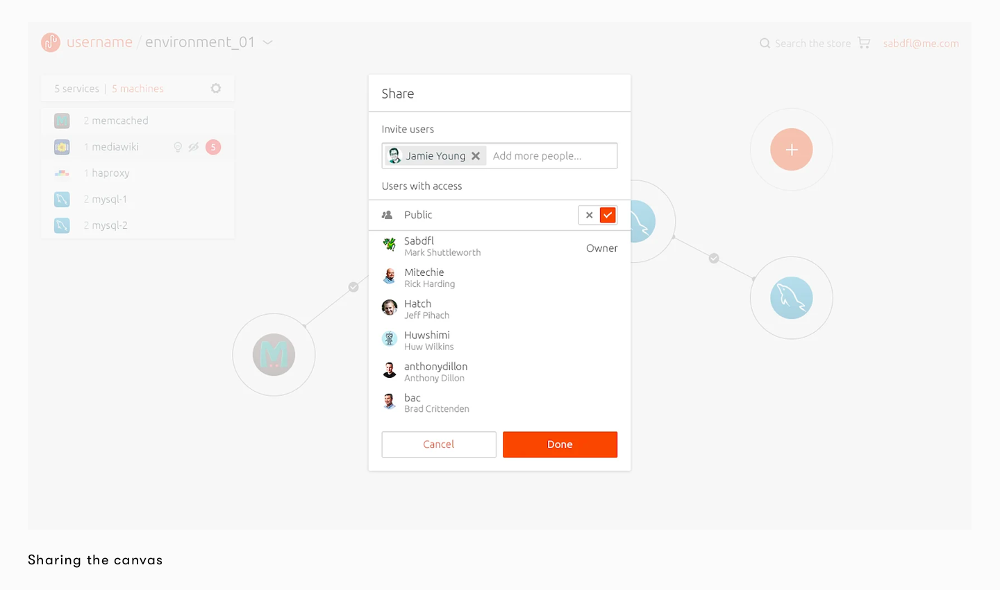 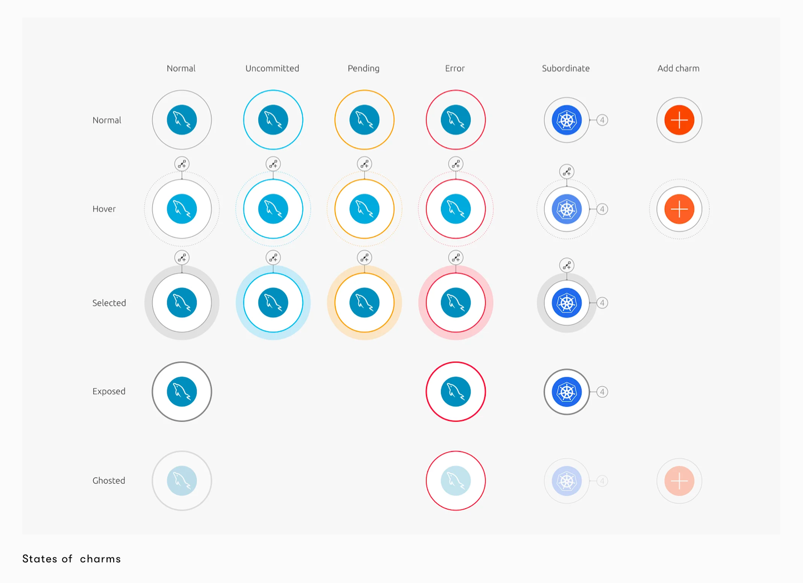The inspector allows users to quickly configure, manage and maintain the service once it has been deployed. Configuring a service at deployment is usually a complex task but the inspector simplifies this process to a few steps.
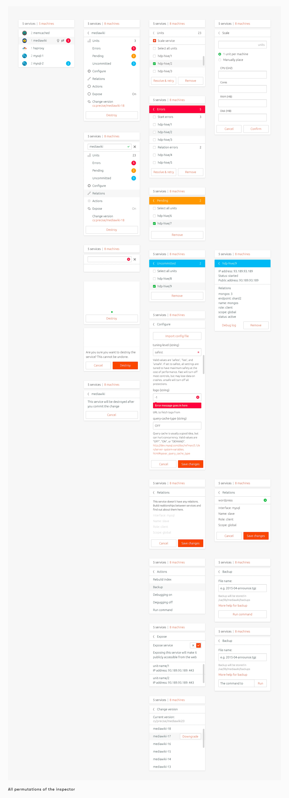 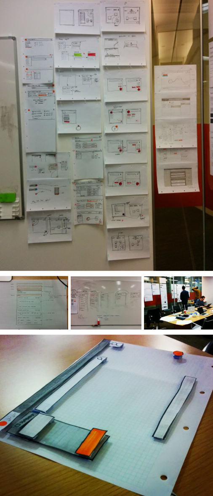To aid developers adding services to their environments we designed a white layer which can be accessed through search and is positioned over the canvas. This gave us more room to present users with search results and information to help them build their applications.
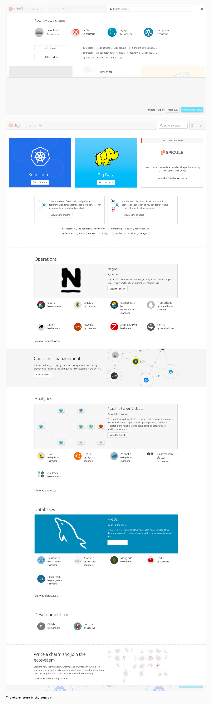 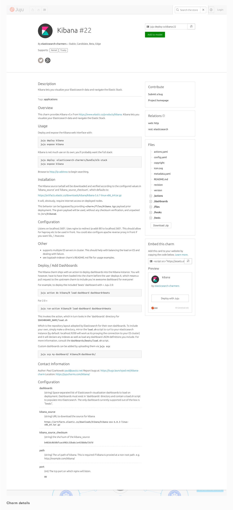JAAS is an incredibly complex product for new users to understand and we noticed that the homepage messaging wasn't working as well as it could be. We've dedicated a lot of our last few months on user onboarding and found that diagrams could really aid users. Visualising the service was a daunting task but through several rounds of user testing and working closely with the engineers we created two diagrams and a new homepage which have been received really well.
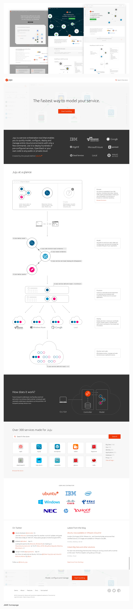When testing the experience of JAAS, we experimented with also testing user sentiment at each stage of usage. This extra layer of understanding of where the friction was when deploying services with JAAS, and we could map back these findings to the UI.
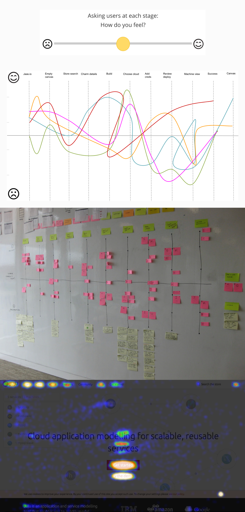 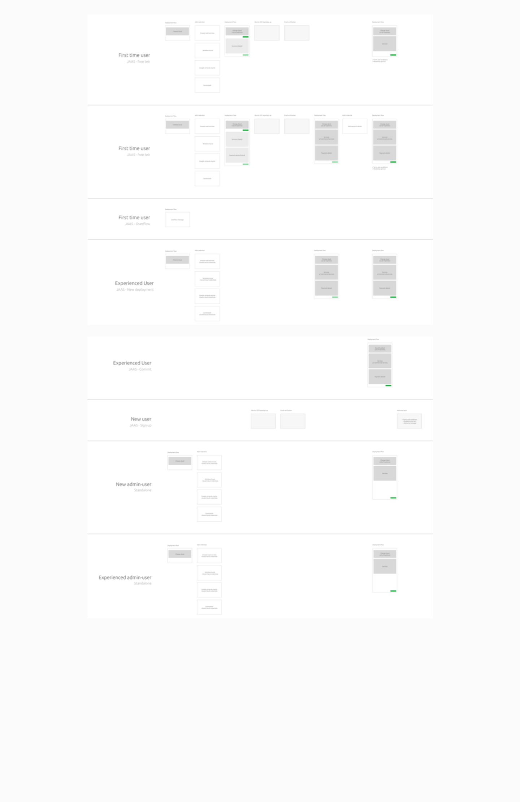As part of the evolution from Juju to JAAS, this came with a billing flow. The challenge here was clearly showing exactly how much each applications in the canvas would cost, and where that cost was coming from.
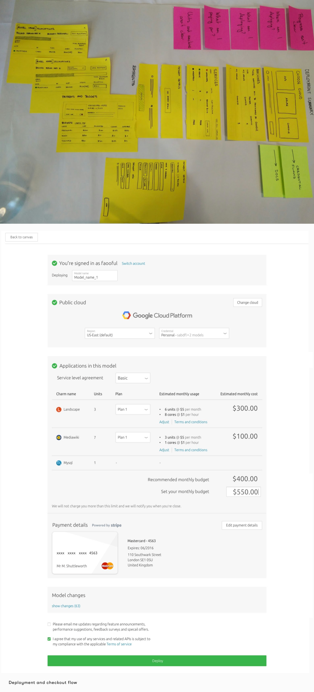We also experimented with JAAS being available on mobile, for instances where accessing your application and there is a need to spin it up or down.
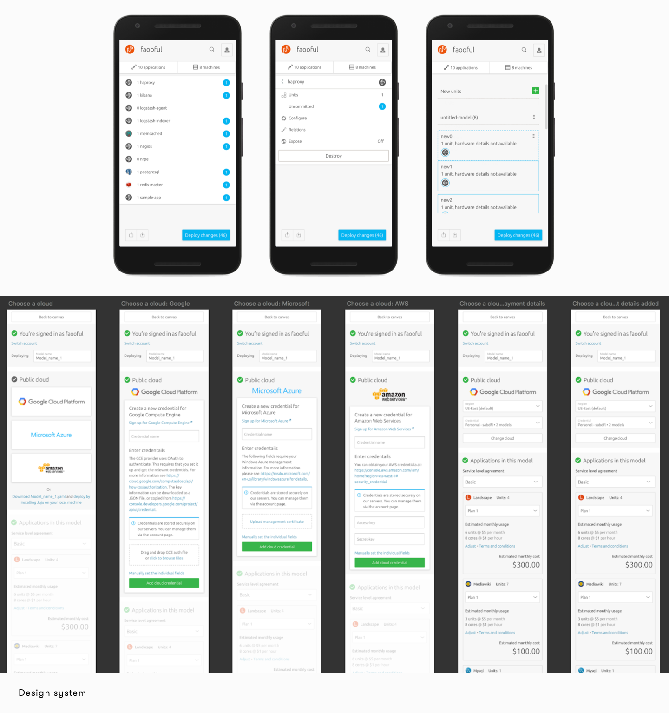